Coğrafi Bilgi Sistemi
Sercan ERHAN - Murat GÜNERİ
sercan.erhan@ibb.gov.tr murat.gunerin@ibb.gov.tr
Coğrafi Bilgi Sistemi Müdürlüğü, Kent Bilgi Sistemi Şefliği
İstanbul Büyükşehir Belediyesi
Sunum Konuları
- Kimdir?
- CBS Nedir?
- Sektörler
- Klasik CBS Mimarisi
- Veri Tipleri
- Mekansal Analiz Örnekleri
- CBS Müdürlüğü Uygulamaları
- Tematik Harita Örnekleri
- İnovatif CBS Konuları
- Kaynaklar
Kimdir?
- Yıldız Teknik Üniversitesi, 2008
- Esri Türkiye, 2008 - 2011
- Ulusal CBS İnovasyon Merkezi, 2011 - 2013
- İstanbul Teknik Üniversitesi,2012 - 2014
- İstanbul Büyükşehir Belediyesi,2013 - ...
CBS | GIS
Coğrafi Bilgi Sistemleri (CBS| GIS) verilerin görselleştirilmesi, sorgulanması, analiz edilmesi ve yorumlanması ile ilişkilerin, modellerin ve trendlerin algılanmasını sağlayan bir bilgi sistemidir.
Hemen hemen her boyuttaki her kurumun ihtiyacı olan bir bilgi sistemidir. CBS‘nin ekonomik ve stratejik öneminin anlaşılması yönünde artan bir ilgi vardır.
Sektörler
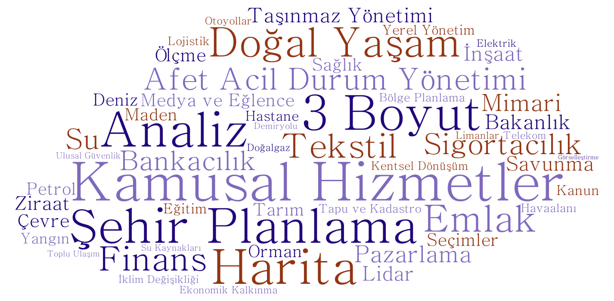CBS - GIS Mimarileri
Veri Tipleri
- Sözel
- Nokta
- Çizgi
- Alan
- Raster
Vektörel Veri Tipleri
POINT (3 5)
LINESTRING (3 14, 3 12, 5 11, 5 10, 6 9, 8 5, 9 4)
POLYGON (8 14, 10 15, 13 13, 15 10, 12 10, 10 12, 8 12, 8 14)
Vektör ve Raster
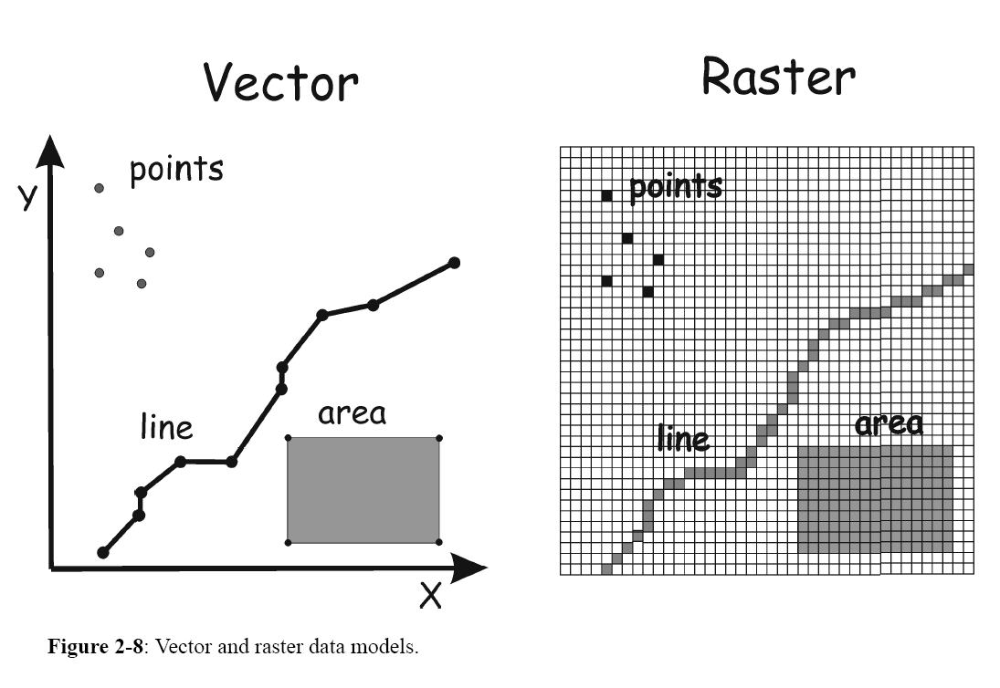Raster Veri

Mekansal Analizler
Geo-Marketing
Network
Etkilenme Analizleri
Görünürlük Analizleri
Geocoding & Reverse Geocoding
İBB CBS Müdürlüğü Uygulamaları
Şehir Haritası
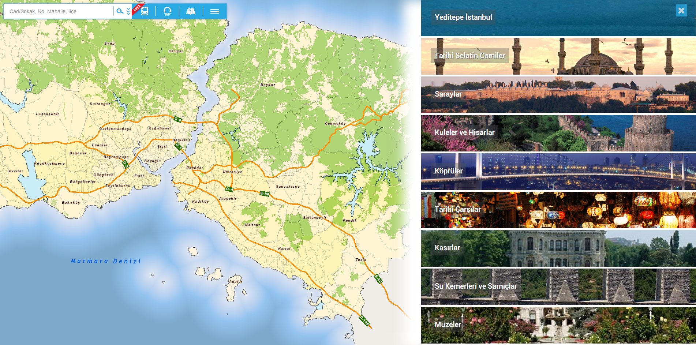
.Net 4.5, Mobil Uyumlu, Bootstrap, SOA Mimarisi, OpenLayers
Günlük 12K Kullanıcı
Panoramik Sokak Görüntüleri
Toplu Ulaşım Güzergah Analizi
Nöbetçi Eczaneler
Sosyal Tesis ve Spor Tesisleri
Gelişmiş Adres Arama
Şehir Haritası API
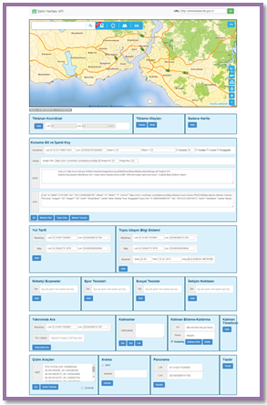
Javascript
Rest & WMS Harita Servisleri
Panoramik Sokak Görüntüleri
Toplu Ulaşım Güzergah Analizi
Veri Ekleme
Sosyal Tesis ve Spor Tesisleri
Altyapı Kazı Planları Bilgi Sistemi
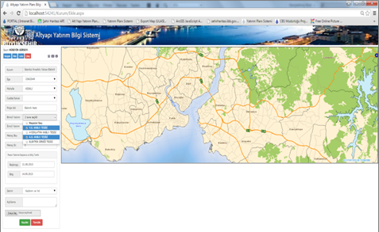
.Net
Yıllık ortalama 50K kazı ruhsatı
39 İlçe Belediyesi
18 altyapı kurumu
İBB Kurumsal GIS Uygulaması
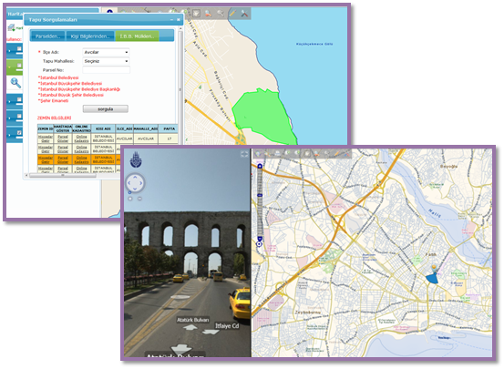
.Net, JS, OpenLayers, JQuery
Anlık 150 kişi, Toplam 5000 Kullanıcı
14 Kategoride 104 Katman
70 Modül
Vektörle Mücadele Uygulaması
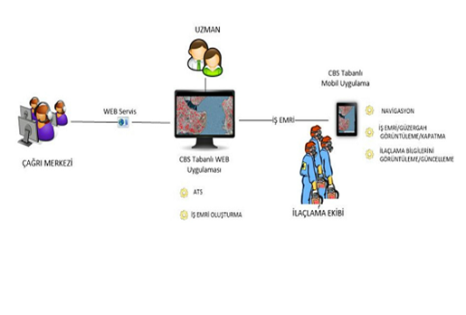
Sağlık ve Hıfzıssıhha Müdürlüğü Vektörle Mücadele ve İlaçlama biriminin mevcut durumu, süreçlerini ve ihtiyaçlarını mekansal ve sözel anlamda yönetilebilir bir yapıya kavuşturmak ve ilgili birimin işlerinin gerçekleştirilmesine imkan veren CBS tabanlı bütüncül bir uygulamanın geliştirilmesi hedeflenmektedir.
İtfaiye GeoERP Uygulaması
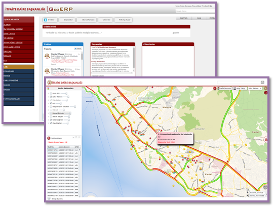
.Net, JS
11 ayda 370K çağrı
8 ayda 6563 olay girişi
GSM Operatörleri
Toplu Ulaşım Bilgi Sistemi
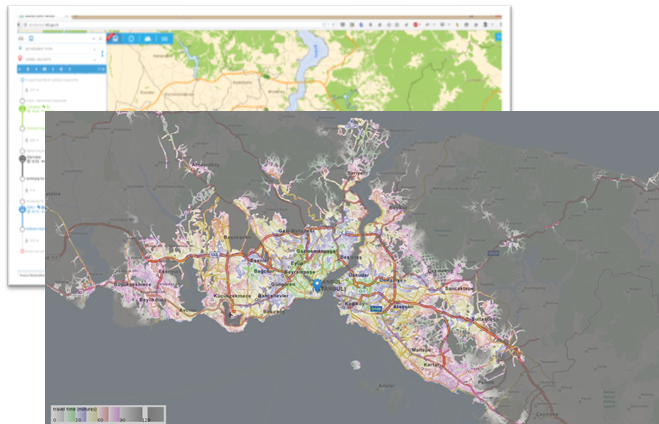
Şehirharitası entegrasyonu
Maramaray'dan minibüse TU modelleri
Erişilebilirlik analizi
GTFS ve Veri Üretimi
Mobil Uygulamalar
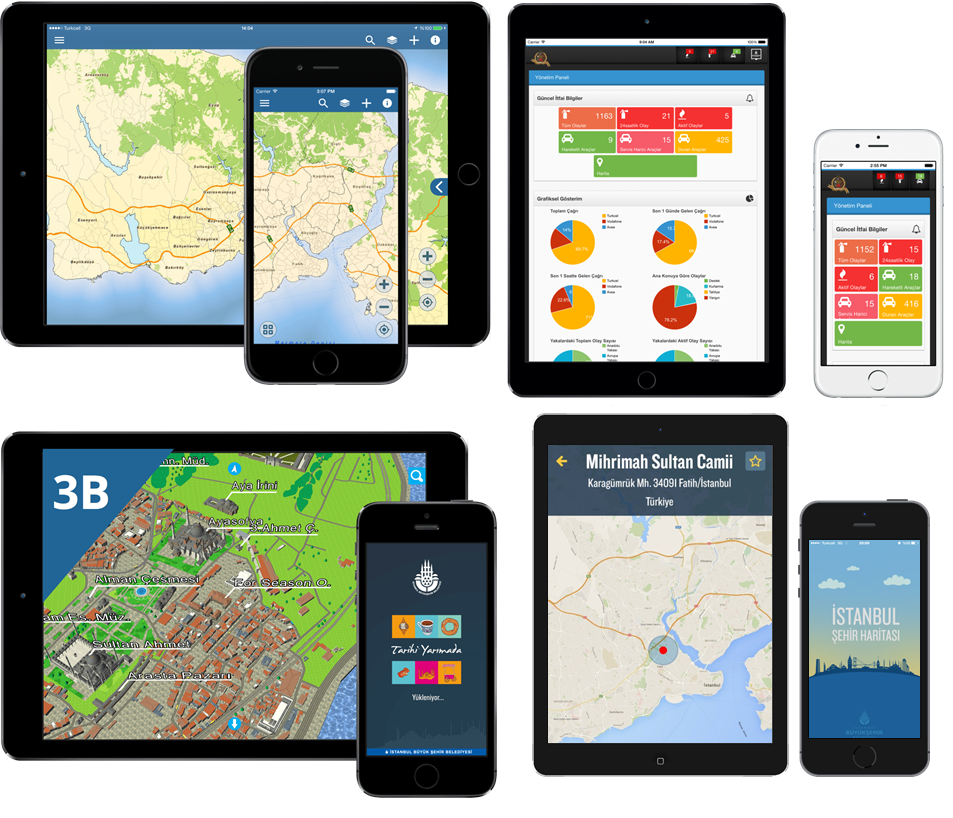
Mobil GIS
İtfaiye Mobil
3B Sanal Şehir
İBB Hizmet Birimleri
Mobil Şehir Haritası
Tematik Haritalar
Solar Radyasyon Haritası
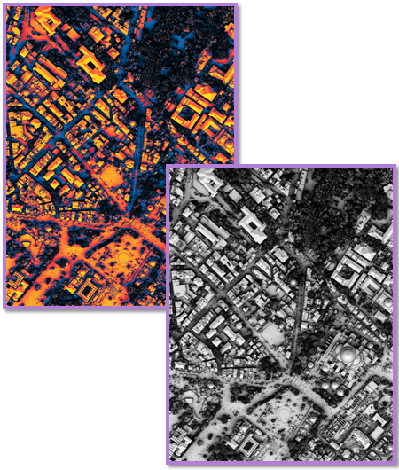TU Erişebilirlik Haritası
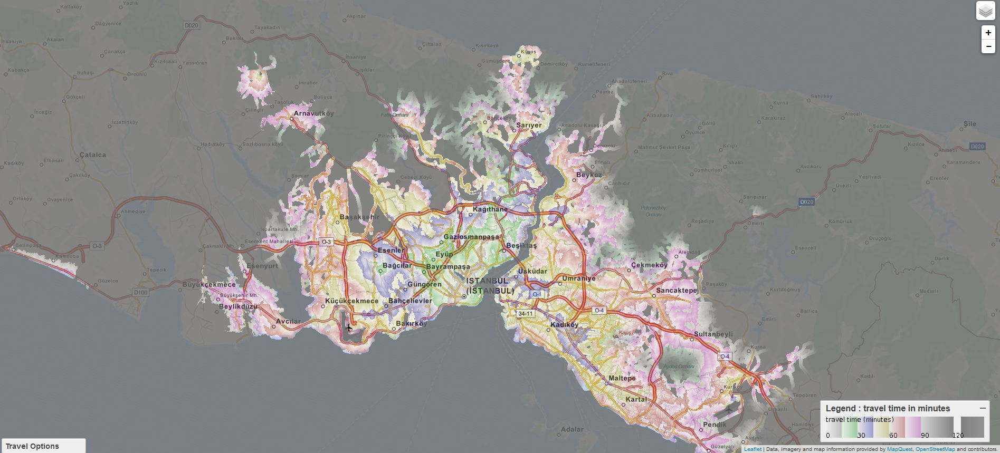İnovatif CBS Konuları
- CBS'de Ar-Ge Süreçleri
- Google Glass ile CBS
- Görselleştirme Teknolojileri
- Kentsel Bilişim ve Büyük Veri
- İHA 'ların Kamuda Kullanımı
- Akıllı Şehirler
Kentsel Yaşam Bilgi Laboratuvarı
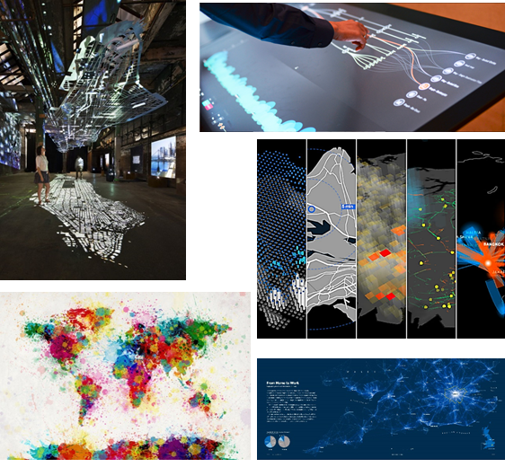
Kenti daha efektif, verimli yönetebilmek ve farkındalığı arttırabilmek için, mekânsal bilgi ve iletişim teknolojilerinin kullanılması
Crowd Sourcing, Sosyal Medya Verileri, İnsansız Hava Araçları, Sensörler, Internet of Things (IoT)
CBS Uzmanları, Kent Plancıları, Veri Tabanı Uzmanları, İstatistikçiler, Yazılım Uzmanları, Görsel Sanatçılar
Üretilen bilginin amacına ulaşması için üretilen ürünün estetik yanının güçlü olması ve dikkat çekmesi için sanatsal yaklaşım kullanılması